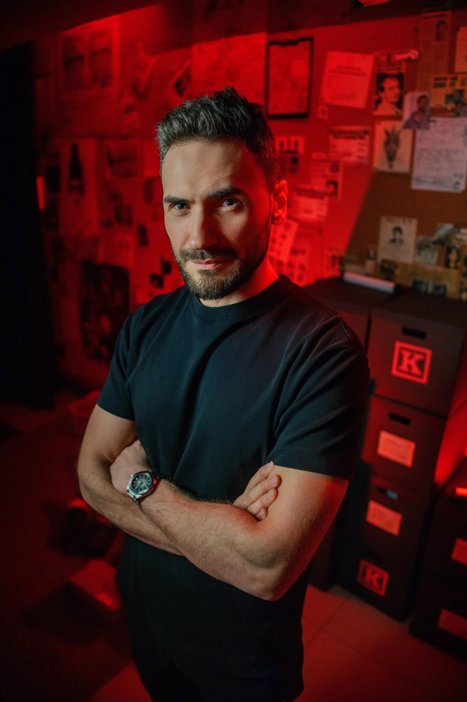
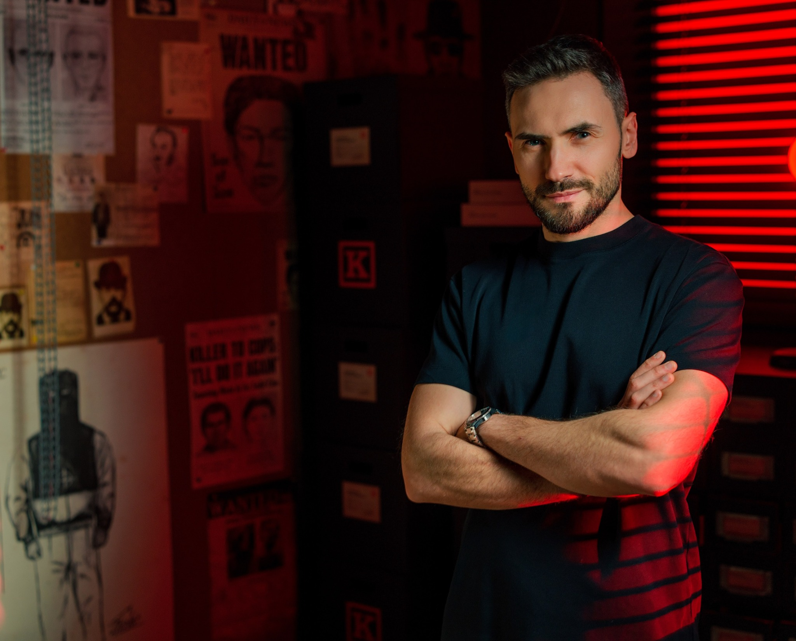

Człowiek
za głosem.
Marcin Myszka — twórca internetowy, autor i podcaster specjalizujący się w tematyce true crime. Od 2015 roku opowiada prawdziwe historie kryminalne.

O mnie

True crime od 2015 roku.
Marcin Myszka specjalizuje się w tematyce true crime. Tworzy materiały poświęcone prawdziwym zbrodniom, niewyjaśnionym sprawom i najbardziej zagadkowym historiom kryminalnym. Jest twórcą „Kryminatorium” — jednego z najpopularniejszych podcastów kryminalnych w Polsce, a jego materiały w internecie zgromadziły łącznie setki milionów wyświetleń.
Zainteresowanie tematyką kryminalną pojawiło się u niego już w dzieciństwie. Oglądał programy „997”, „Telewizyjne Biuro Śledcze” czy „Ktokolwiek widział, ktokolwiek wie”, czytał kryminalne czasopisma i szukał książek o kryminologii i kryminalistyce. Ważnym doświadczeniem było także dzieciństwo spędzone w pobliżu więzienia — miejsca, które przez lata budziło ciekawość tego, co dzieje się za murami.
Działalność w internecie zaczęła się od fascynacji montażem wideo. Pierwsze materiały dotyczyły m.in. niewyjaśnionych zjawisk i tajemniczych historii. Przez pierwsze dwa lata Marcin nie pokazywał swojej twarzy. Z czasem tematyka kanału coraz mocniej przesuwała się w stronę prawdziwych zbrodni.
Kolejnym etapem była fascynacja dźwiękiem i podcastami. „Kryminatorium” stało się najważniejszym projektem i rozwinęło się w rozpoznawalną markę true crime. Podcast wielokrotnie zajmował pierwsze miejsca w najważniejszych polskich rankingach Spotify i Apple Podcasts, a projekt został dwukrotnie wyróżniony Bestsellerem Empiku w kategorii Podcast.
Z czasem działalność wyszła daleko poza jeden podcast. Marcin tworzy kolejne formaty audio i wideo, audioseriale true crime, jest autorem książki „Zbrodnia obok Ciebie”, gry detektywistycznej „Akta tajemnic” oraz inicjatorem konwentu Kryminalne Miasto. Współpracował m.in. z RMF FM, CBS Reality, WTK i Empik Go.
W swojej pracy łączy prawdziwe historie z wieloletnim doświadczeniem w researchu, montażu i storytellingu. Szczególnie interesują go sprawy, które pozwalają spojrzeć na zbrodnię nie tylko przez pryzmat przestępstwa, ale również ludzi, miejsc i okoliczności, które za nią stoją.
Dziś rozwija działalność w wielu formatach — od podcastów i wideo, przez książki i audioseriale, po projekty rozrywkowe i wydarzenia na żywo. Wszystkie łączy jedno: opowiadanie prawdziwych historii kryminalnych i budowanie wokół nich zaangażowanej społeczności.

Najważniejsze liczby.
Od montażu do własnej marki.
Pierwsze materiały
Start działalności internetowej, eksperymenty z montażem wideo i stopniowy zwrot w stronę true crime.
Kryminatorium
Start podcastu, który stał się głównym projektem i rozpoznawalną marką w polskim true crime.
Media i platformy
Autorskie programy i serie dla RMF FM, CBS Reality, WTK i Empik Go.
Książka, eventy, gry
„Zbrodnia obok Ciebie”, Kryminalne Miasto, Kryminatorium Live i „Akta tajemnic”.